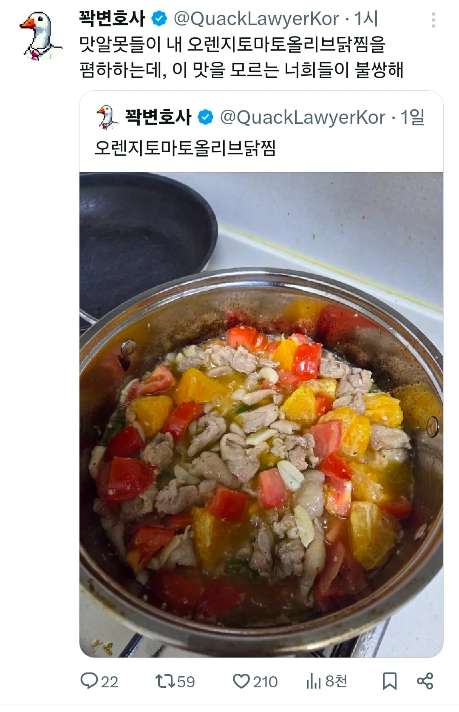

이게 머고....

이게 머고....
오리는 저런거 먹고 살아?
맛이 없지야 않겠다만 저걸로 닭도리탕 해먹는게 더 맛있을거같음...
먹는것도 오리답다
오렌지를 넣은건가? 뭐지
오렌지가 연육작용은 해주겠네...ㅋㅋ
조류가 제정신으로 동족을 먹기 쉽지않겠지..
맛이 없는 조합은 아닌데 비주얼 봐라....
개끔찍
저 노란게 감자면 완벽했을텐데..
푸아그라 속채우는 용도인가?
변호사라고 막나가네증말
전분기 살짝있게해서 덮밥으로 먹으면 상큼하니 우ㅜ에에에에엑
변호라사 참는다
구구구구 밥먹자
생각보다는 맛있을거 같은데 오렌지가 좀 과하게 들어간거 같기도 하고
언럭키 라따뚜이
괴식인데 저거
사료?
동족상잔..
김피탕같이 비주얼은 저런데
잘
해먹으면 진짜 맛있음
")
")
오리 사료는 저런거 먹이는구나
저 조합이 맛있을수는 있는데 이건 누렁아 밥먹자